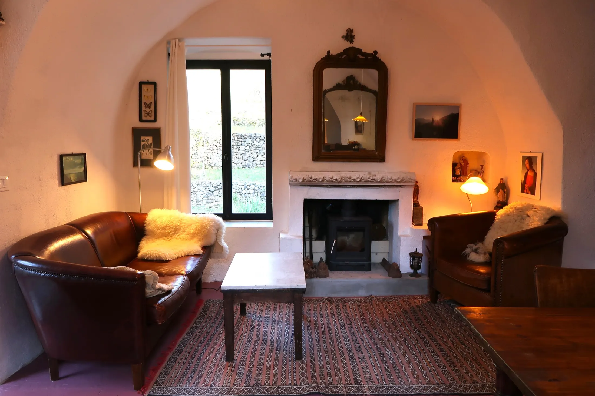
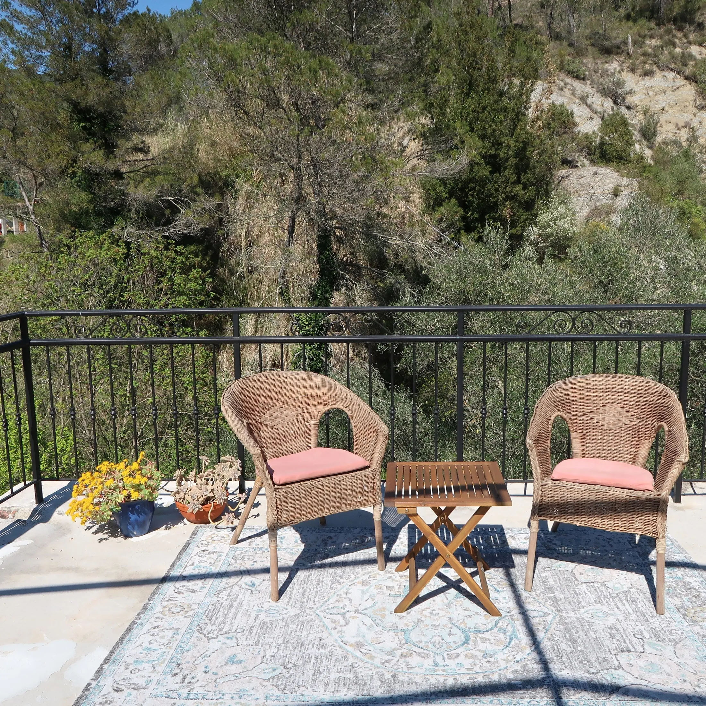

Onderste verdieping
Slaapkamer met tweepersoonsbed en een badkamer met toilet en douche. Beide ruimtes hebben een eigen buitendeur.
Vrijstaand natuurstenen huis
Voor maximaal 6 personen, met drie slaapkamers, twee badkamers en terrassen rondom het huis.
Het huis is oud, gebouwd van natuursteen en heeft boogkamers zoals huizen in deze regio oorspronkelijk werden gemaakt. Binnen is het eenvoudig en warm ingericht, met alles wat nodig is voor een ontspannen verblijf.
De middelste verdieping vormt het hart van het huis: woonkamer met zithoek, houtkachel en eettafel, keuken en een slaapkamer met twee aparte bedden. De kamers zijn onderling verbonden en hebben ieder ook een deur naar buiten.

Het huis ligt tegen het terrein aan en heeft buitenom bereikbare verdiepingen. Dat geeft veel privacy, maar vraagt wel om rekening houden met trappen en niveauverschillen.
Slaapkamer met tweepersoonsbed en een badkamer met toilet en douche. Beide ruimtes hebben een eigen buitendeur.
Woonkamer, keuken en slaapkamer met twee aparte bedden. De keuken sluit aan op een overdekt terras.
Slaapkamer met tweepersoonsbed, badkamer met douche, wastafel en toilet, plus toegang tot het dakterras.

Rondom het huis ligt een grote tuin met plekken om te zonnen, in de schaduw te eten of rustig te lezen. Aan de achterkant blijft het overdekte terras ook in de zomer aangenaam koel.
Naast het huis ligt een waterval, het eindpunt van een eeuwenoud irrigatiekanaal dat terug de Bevera instroomt. Je hoort de rivier, de waterval, vogels, krekels en kikkers; soms zie je herten en everzwijnen waar de tuin overloopt in de vrije natuur.
Als het donker wordt zie je de heldere sterrenhemel en hoor je het fluitende geluid van de dwergooruil.
Alle geselecteerde foto's van het huis. Klik op een foto om groot te bekijken.